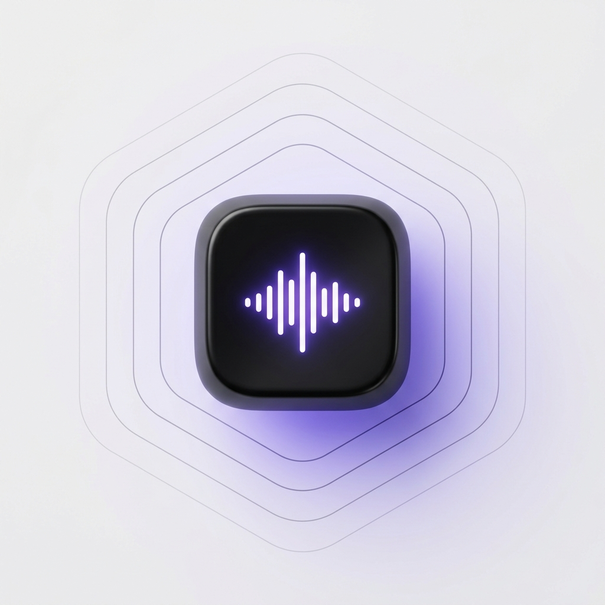

An editorial, handcrafted dictation tool for macOS. Transcribe your voice in real time and paste it directly into your active window. Full offline security with zero network telemetry.

Tactile workflows, raw hardware acceleration, and robust application formatting rules.
Transcribe instantly. Custom Whisper execution optimized for Apple Silicon guarantees sub-100ms response times.
Designed as a background daemon. A single global key combination captures, formats, and types your thoughts with zero clicks.
Automatically parses dictation style based on destination. Emits shell command logic, markdown notes, or conversational text depending on active application focus.
Transcriptions are processed entirely in memory on your Mac. No network logs, no telemetry, and complete system privacy.
How Tick automates your spoken thoughts into the active document.
Hold your configured global hotkey (e.g., ⌥ + Space). Capturing begins instantly with a haptic chime.
The Core ML engine transcribes your voice directly in-memory using Whisper or Parakeet models.
Tick analyzes the focused window. Shell commands, Slack chats, or notes are formatted on-the-fly.
The formatted text is typed directly into your active cursor position. The system plays a completion chime.
Choose from optimized on-device models. From featherweight models for instant command entry to heavy weights for precise long-form transcriptions.
Press and hold to start recording speech. Release to instantly transcribe and paste into the active window. (Customizable in settings)
Paste your last voice dictation into the focused input field again. (Customizable in settings)
Instantly cancel the current transcription process while recording.
Tick is built to be a pure tool. We believe developer utilities should respect system isolation and secure input by default.
All audio recording, Whisper Core ML model loading, and speech processing happen locally on your Apple Silicon hardware. No data is ever uploaded to a server.
We do not log transcripts, track usage stats, or record analytics. There are no tracking scripts or third-party cookies anywhere in the app or on this site.
Tick inspects the focused macOS application bundle identifier on trigger. If the active app is a terminal emulator or IDE (like VS Code or Terminal), it formats dictation into syntax-valid CLI options or code structures. If the app is a messenger (like Slack), it preserves natural conversation strings.
Yes. You can import any custom Core ML-compiled Whisper model directly through the settings interface. The app scans your local directory and adds them to the available model list automatically.
Whisper models are saved in standard app cache support paths: ~/Library/Application Support/com.dipxsy.Tick/models/. Parakeet models reside inside the sandbox container's FluidAudio paths.